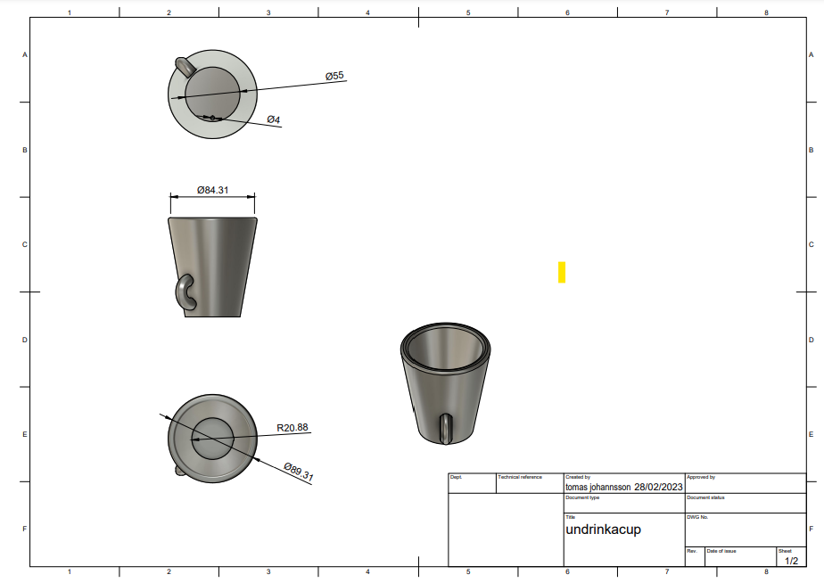
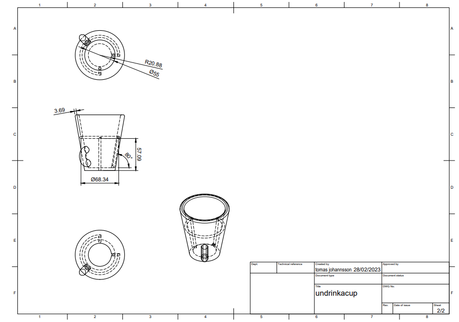
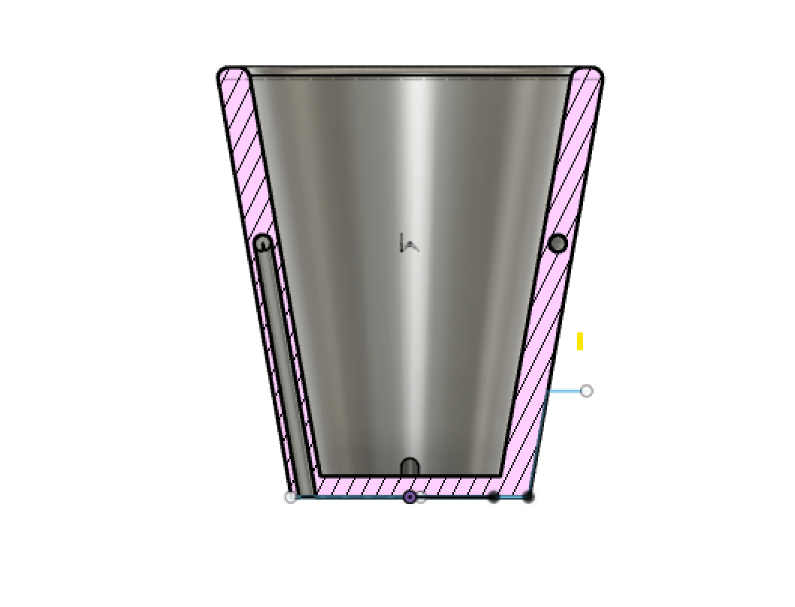
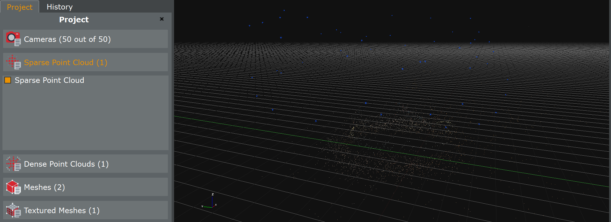
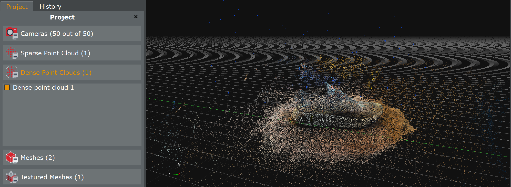
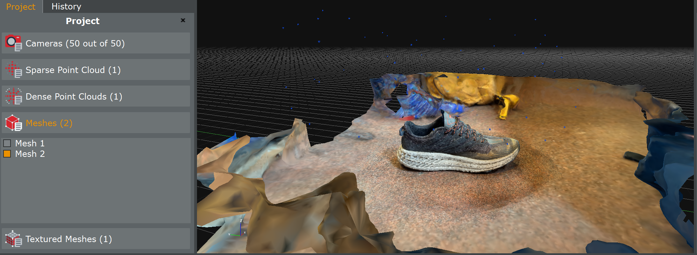

The following is a detailed description of of the second project in the university course VÉL403G. The objective of this particular project is to use a 3D printer to make a structure that can´t be replicated using subtractive methods (CNC etc.) and to document the restrictions of the 3D printer. The object can´t be more than 100g of plastic. The second part of the project is to 3D scan an object. Here you'll find the documented process of the project and a step-by-step description on how to do it yourself!
Preperation
I began with downloading the recommended programs for the project.
- Fusion 360 - CAD software
- Prusaslicer - Software for processing and preparing documents for the 3D printer
- 3D Zephyr - 3D scanning software
UndrinkaCup
It didn´t take long for me to decide what to do. I went with a Pythagorian Cup, a.k.a. Greedy Cup, but modifying it slightly and put another name on the creation. I decided to make it as difficult as possible to drink out of by putting a handle that was way too low on the cup and way to small, ergo the name UndrinkaCup. I went with PETG plastic because it´s one of the most widely spread food plastic and considerably safe to drink from (in case I ever wanted to do so).
CAD
It should come to no surprise that I began with drawing the object. If you want to draw exactly the same cup feel free to. If you´re new to Fusion 360 I recommend checking out this video. It helped me out a lot when I first got to know the software.
  The cup itself wasn´t too difficult to draw. The difficult part of the drawing was the drainage system that the liquid would go through. Im sure there are many ways to do it but I used a function called sweep, it came in real handy and I´m sure it saved me a lot of time.
Prusa
The name of the printer I used and recommend using is Prusa MK3+ so when downloading the software make sure to choose the right printer and a nozzle of 4 mm when prompted to do so.
Steps
First of all you have to export your drawing to an STL file format so open up your drawing in Fusion 360 and choose File -> Export -> STL Files (*.stl)
Now just wait a bit for the software to do its thing. When it´s done uploading you can go ahead and run your PrusaSlicer software. When it´s up and running choose File -> Import -> Import STL -> Your STL File -> Slice now. Now would be a good time to get the graphic card from the printer and connect to your computer. You should be able to export the G-code to the graphic right about now (right lower corner) but before you do that you might want to check the infill of the object and the supports. I had to put on some supports at the handle because the printer struggles with printing horizontally. I recommend you check out this video
before proceeding. It helped me a lot. Now everythings ready, go ahead and export the G-file to the graphic card. When the upload is complete, eject the card and insert it into the printer. Now you have to get the plastic ready. Since I used PETG I had to put a layer of glues on the printing plate.
I recommend you check out this video if you´re struggling. Otherwise just press the button on the printer and choose your file and print it (it takes a while to begin). Fast forward 10 hours and 100g of plastic and the cup was ready and it worked perfectly. Don´t believe me? See for yoursel!
3D Scanning
I decided to 3D scan my shoe. The main reason for that decision is that according to developers instructions the surface of the object can´t be transparant or reflective, both of which my shoe is not. For this part of the project I needed a software I hadn't used before (Zephyr) but thankfully it´s quite beginner friendly and easy to work with. Also, the developershave made some very nice tutorial videos of which I higly recommend. I recommend learning to take correct photos because it can be a little tricky at times. As I said, these are some great videos and I just followed them step by step. Your progress should be similar to this.
  